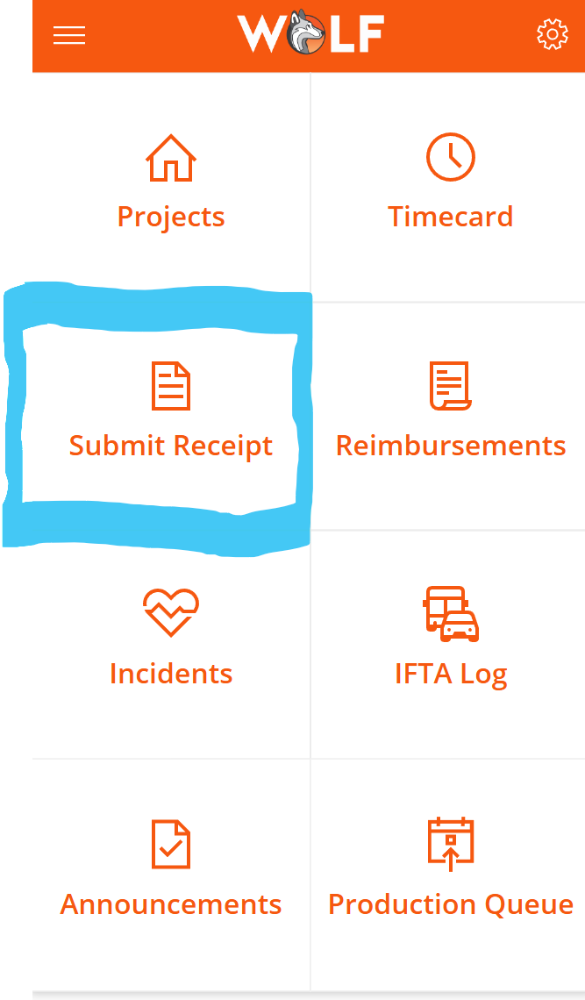
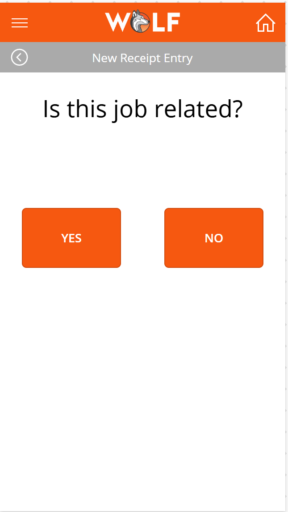
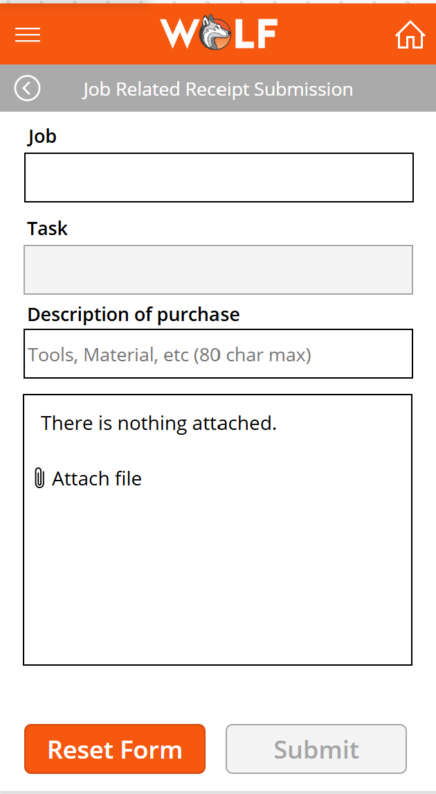

Briefly explain what the project does, who it helps, and what business problem it solves.
Power Apps, Power Automate, Dataverse, SharePoint, Excel, Teams, Outlook, Custom Connector, Business Central, or other tools used.
Explain the manual process, bottleneck, duplicate entry, missing visibility, or business risk that existed before the solution.
Explain what you built and how the user interacts with it.
Describe the technical skills shown by this project, such as formulas, triggers, approvals, conditions, Dataverse relationships, JavaScript, business rules, or API integration.



Here is the Fx code for the onSelect property of the 'Submit' button.
If( CountRows(JobReceiptAttachmentControl.Attachments) = 0, Notify( "Please add at least one attachment before submitting.", NotificationType.Error ), Set( varJobTaskCategory, SelectedJob.Job_No & "_" & SelectedJobTask.Task_No & "_" & Substitute(JRReceiptSubmissionFormPurchaseCategoryValue.Text, "/", "_") ); Set( varEmailSubject, "App Receipt" & "_" & varJobTaskCategory & "_" & RandBetween(1, 999) ); Set( varEmailBody, "Job/Task/Category: " & varJobTaskCategory & Char(10) & "Submitted by: " & User().FullName & " (" & User().Email & ")" ); Set( varEmailAttachments, ForAll( JobReceiptAttachmentControl.Attachments, { Name: varJobTaskCategory & "_" & Name, ContentBytes: Value } ) ); Office365Outlook.SendEmailV2( "ap@wolfind.com", varEmailSubject, varEmailBody, { Cc: If( First(EmployeeDetailsCollection).GlobalDim1 = "FIELD SERVICE", "thuegel@wolfind.com", Blank() ), Attachments: varEmailAttachments } ); Reset(JobReceiptAttachmentControl); ResetForm(JRReceiptSubmission_Form); Clear(JobsListCollection); Clear(JobDetailsCollection); UpdateContext({ showDialog: true }) )